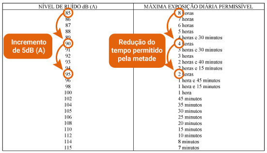

Os limites de tolerância ocupacional (estabelecidos pela NR-15, pelos TLVs e BEIs da ACGIH, pela OSHA ou pela NIOSH) são desenvolvidos como orientações para ajudar no controle de riscos à saúde dos trabalhadores. Essas recomendações destinam-se à prática de higiene industrial nos ambientes de trabalho durante as jornadas de trabalho e devem ser aplicadas pelos profissionais higienistas, incluindo-se aqui os Técnicos de Segurança do Trabalho.
A Norma Regulamentadora 15 define Limite de Tolerância como “a concentração ou intensidade máxima ou mínima, relacionada com a natureza e o tempo de exposição ao agente, que não causará dano à saúde do trabalhador, durante a sua vida laboral”. A avaliação quantitativa de agentes aos quais o trabalhador está exposto exige a determinação da intensidade, no caso de agentes físicos, e da concentração ambiental, no caso dos agentes químicos. Devem ser realizadas avaliações quantitativas para ruído (Anexos n° 1 e 2), calor (Anexo n° 3), radiações ionizantes (Anexo n° 5), vibração (Anexo n° 8), agentes químicos (Anexo n° 11) e poeiras minerais (Anexo n° 12).
Cabe ressaltar que a NR-15 está sendo revisada, pois alguns de seus parâmetros estão desatualizados. Desde 1978, ela não foi substancialmente atualizada. Além disso, com relação aos agentes químicos, por exemplo, seu escopo contempla uma quantidade pequena, de 140 substâncias aproximadamente, enquanto a ACGIH trata de mais de 650 substâncias.
Os limites de tolerância para o ruído são estabelecidos nos Anexos 1 e 2, para ruído contínuo ou intermitente e ruído de impacto, respectivamente. No caso de ruídos contínuos ou intermitentes, a norma apresenta uma tabela relacionando o nível de ruído, em decibéis – dB (A) e o tempo máximo de exposição diária permitida. Sendo que os tempos de exposição aos níveis de ruído estabelecidos na tabela não devem ser excedidos e não são permitidas exposições a níveis de ruído acima d 115dB (A) sem devida proteção, sendo que esta é considerada uma condição de risco grave e iminente.
Já nos casos de ruído de impacto, o limite de tolerância será de 130 dB (linear) e nos intervalos entre os picos, o ruído existente deverá ser avaliado como ruído contínuo.
Os níveis de ruído contínuo ou intermitente devem ser medidos em decibéis (dB) com instrumento de nível de pressão sonora operando no circuito de compensação "A" e circuito de resposta lenta (SLOW) e as leituras devem ser feitas próximas ao ouvido do trabalhador.
No caso do ruído de impacto, os níveis deverão ser avaliados em decibéis (dB), com medidor de nível de pressão sonora operando no circuito linear e circuito de resposta para impacto sendo que as leituras também devem ser feitas próximas ao ouvido do trabalhador.
Nível de ação é o valor a partir do qual devemos iniciar a adoção de medidas preventivas e no caso do ruído é estabelecido pela Norma Regulamentadora – NR 09 que determina que para este agente físico o nível de ação é a metade da dose.
Mas atenção! Diferentemente do que imaginamos inicialmente, não seria correto pegar o valor obtido na tabela, como por exemplo, 85dB (A) para uma exposição de 8 horas e dividir por 2, obtendo 42,5dB(A), tendo em vista que se trata de uma escala logarítmica e por isso não é possível aplicar uma média aritmética.
Vamos entender melhor?
No ruído ocupacional o valor dobra ou cai pela metade a cada 5dB (A). Que tal fazermos essa constatação observando a tabela do anexo 1 da NR15?
Figura 1: Demonstração do incremento de dose adaptado do anexo 1 da NR-15
Fonte: adaptado de NR-15 (Brasil, 2023)
Tendo isso em vista, a metade da dose de 85dB (A) é 80dB(A) e, portanto, este é o nosso nível de ação.
O limite de tolerância do calor, também chamado de Limite de Exposição Ocupacional, é dado pela NR15 em seu anexo nº 3. Nele é apresentado um quadro relacionando a taxa metabólica com o valor do Índice de Bulbo Úmido Termômetro de Globo - IBUTG máximo permitido. Além disso, a norma disponibiliza uma tabela para determinação da taxa metabólica do trabalhador de acordo com a atividade realizada.
Importante destacar que o anexo 3 da NR15 que trata de calor aplica-se apenas a ambientes fechados ou com fonte artificial de calor, não se aplicando a atividades a céu aberto ou sem fontes artificiais de calor.
Desta forma, o valo de IBUTG (médio) medido no local de trabalho não deve ultrapassar o valor de Índice de Bulbo Úmido Termômetro de Globo máximo apresentados no quadro da norma.
No ato da medição devem ser considerados na avaliação da exposição ao calor, os valores obtidos no período de 60 (sessenta) minutos corridos, coletados na condição mais crítica de exposição.
A avaliação quantitativa do calor deve ser realizada através do Índice de Bulbo Úmido Termômetro de Globo Médio IBUTG levando em consideração a Taxa Metabólica Média M, sendo o IBUTG um índice calculado com base na temperatura de bulbo úmido natural, temperatura de globo e temperatura de bulbo seco, expresso em graus Celsius (ºC) no quadro no Anexo 3 da NR15. Já a taxa metabólica é expressa em watt (W).
No caso do calor o nível de ação também é determinado na NR09, mas neste caso em seu anexo 3, onde pode ser consultado o quadro de Nível de Ação para exposição ao calor. Assim como no caso da determinação do limite de exposição, neste quadro também temos o valor de IBUTG a ser considerado para cada taxa metabólica.
Para determinação do Limite de Tolerância para trabalhadores expostos a Radiações Ionizantes, o anexo nº 5 da NR-15 traz uma definição diferente dos demais fatores de risco. Neste caso a norma indica que os limites de tolerância, os princípios, as obrigações e controles a serem adotados para a proteção do homem e do seu meio ambiente contra possíveis efeitos indevidos causados pela radiação ionizante, estão determinados da Norma CNEN-NN-3.01: "Diretrizes Básicas de Proteção Radiológica", de março de 2014, aprovada pela Resolução CNEN n.º 164/2014, ou daquela que venha a substituí-la, determinando assim, a consulta a esta norma para conhecimento de todos os cuidados relativos a este fator de risco.
O limite de tolerância para vibração é determinado pelo anexo nº 8 da NR15, sendo importante destacar que podemos ter 2 tipos de vibração: Vibrações de Mãos e Braços (VMB) e Vibrações de Corpo Inteiro (VCI) e para cada uma delas teremos formas de avaliação, metodologia, equipamentos e limites de exposição ocupacional diferentes.
O limite de exposição ocupacional diária a VMB correspondente a um valor de aceleração resultante de exposição normalizada (aren) de 5 m/s 2. Já os limites de exposição ocupacional diária a VCI são:
A norma estabelece ainda que a avaliação quantitativa deve ser representativa da exposição, abrangendo aspectos organizacionais e ambientais que envolvam o trabalhador no exercício de suas funções.
Você deve ter observado que utilizamos um valor de “aren”, mas o que isso significa? O aren é a aceleração resultante do tempo de medição convertido para uma jornada diária de 8 horas.
Já o VDVR representa a dose de vibração resultante da exposição diária, considerando a soma dos três eixos de medição. A unidade de medida utilizada no caso das vibrações é a aceleração, medida em metros por segundo ao quadrado (m/s2).
Assim como VMB e VCI tem limites de exposição diferentes, também possuem níveis de ação diferentes. Ambos são determinados no anexo 1 da NR09.
O nível de ação para a avaliação da exposição ocupacional diária à vibração em mãos e braços (VMB) corresponde a um valor de aceleração resultante de exposição normalizada (aren) de 2,5 m/s2.
Já o nível de ação para a avaliação da exposição ocupacional diária à vibração de corpo inteiro (VCI) corresponde a um valor da aceleração resultante de exposição normalizada (aren) de 0,5m/s2, ou ao valor da dose de vibração resultante (VDVR) de 9,1m/s1,75.
Os limites estabelecidos pela Portaria n° 3.214/78, por meio da NR-15, nos anexos 11 e 12, foram adaptados para a jornada de trabalho instituída no Brasil. Esses valores foram adaptados da ACGIH, uma entidade que congrega higienistas e indústrias do governo norte-americano e que recomenda os limites de tolerância. O regime de trabalho norte-americano era de 40 horas semanais e o do Brasil, na época, de 48 horas. Depois, houve uma adaptação e nossa jornada de trabalho, atualmente, é de 44 horas semanais.
No Anexo 11 da NR-15 são fornecidos os limites de tolerância para os agentes químicos, bem como a indicação absorção pela pele (que é apresentada por alguns agentes) e o grau de insalubridade, além das substâncias que apresentam o valor-teto.
O limite de tolerância é uma orientação para se fazer os controles dos contaminantes e não uma indicação entre concentrações seguras e perigosas.
Com o Anexo 11, o limite passou a ser de tolerância média ponderada durante o período de trabalho. Essas concentrações poderão oscilar desde que a média esteja abaixo desse valor; porém, essas oscilações não podem ultrapassar um valor chamado valor máximo.
As unidades dos limites de tolerância são expressos em partes por milhão (ppm) ou miligramas por metro cúbico (mg/m³). A substância química inalada pode ser em forma de gás, vapor ou aerossol.
Os limites de tolerância para aerossóis são normalmente fixados em termos de massa da substância química no ar por volume. São expressos em miligramas por metro cúbico (mg/m³). Os limites de tolerância para gases e vapores são estabelecidos em partes por milhão (ppm), mas também podem ser expressos em miligramas por metro cúbico mg/m³.
Para fazer a conversão de unidades de concentração de ppm para mg/m³, devemos utilizar o quadro a seguir:
| Unidade original | Fator de multiplicação | Nova unidade |
|---|---|---|
| ppm | 0,0001 | % |
| % | 10.000 | ppm |
| mg/m³ | 24,45/M[¹] | ppm |
| ppm | M[¹]/24,45 | mg/m³ |
Tabela 01: Conversão de ppm para mg/m³.
Fonte: BREVIGLIERO, Ezio; POSSEBON, José; SPINELLI, Robson. Higiene ocupacional: agentes biológicos, químicos e físicos. São Paulo: Ed. Senac São Paulo, 2006. Página: 74.
[¹] É a massa molecular da substância.
Quando tivermos a unidade de medida de uma substância química em ppm (partes por milhão) e quisermos converter para unidade de medida em % (percentagem), deveremos multiplicar por 10.000. Se tivermos a unidade de medida de um determinado produto químico em % e quisermos converter para unidade de medida em ppm, deveremos multiplicar por 0,0001. Quando tivermos a unidade de medida de uma substância em miligramas por metro cúbico (mg/m³) e quisermos converter para unidade de medida em partes por milhão (ppm), deveremos utilizar M/24,45, em que o “M” é a massa molecular da substância. E, finalmente, quando precisarmos fazer a conversão de partes por milhão (ppm) para miligramas por metro cúbico (mg/m³), deveremos utilizar 24,45/M, lembrando que “M” é a massa molecular do produto químico.
O valor máximo é determinado por meio do produto do limite de tolerância, por um fator de desvio, que é função da faixa de valor em que está esse limite. Na tabela a seguir, é mostrado o fator de desvio para calcular o valor máximo.
| Valor máximo = LT (limite de tolerância) x FD (fator de desvio) | |
|---|---|
| Limite de tolerância (partes por milhão ou miligrama por metro cúbico) | Fator de desvio |
| 0 < LT < 1 | 3,00 |
| 1 < LT < 10 | 2,00 |
| 10 < LT < 100 | 1,50 |
| 100 < LT < 1.000 | 1,25 |
| LT > 1.000 | 1,10 |
Tabela 02: Quadro n° 2 do Anexo 11 da NR-15 (Fator de Desvio para cálculo do valor máximo).
Fonte: BREVIGLIERO, Ezio; POSSEBON, José; SPINELLI, Robson. Higiene ocupacional: agentes biológicos, químicos e físicos. São Paulo: Ed. Senac São Paulo, 2006. Página: 69.
O cálculo do valor máximo é igual ao limite de tolerância vezes o fator de desvio. Se o limite de tolerância estiver entre 0 e 1, o fator de desvio a ser considerado será de 3,00. Se o limite de tolerância estiver entre 1 e 10, o fator de desvio a ser considerado será de 2,00. Se o limite de tolerância estiver entre 10 e 100, o fator de desvio a ser considerado será de 1,50. Se o limite de tolerância estiver entre 100 e 1.000, o fator de desvio a ser considerado será de 1,25. Se o limite de tolerância for maior que 1.000, o fator de desvio a ser considerado será de 1,10.
Exemplo: O cloro tem um limite de tolerância de 0,8 ppm; logo, o seu valor máximo (VM) é o produto do limite de tolerância por 3,00, que é o fator de desvio (FD) para produtos com o limite de tolerância (LT) entre 0 e 1 ppm.
VM = LT x FD
VM = 0,8 x 3,00 = 2,4 ppm
VM = 2,4 ppm
Representa um valor que não pode ser ultrapassado, pois é um produto de efeito muito rápido. Dessa forma, não aplicamos o fator de desvio. O limite de tolerância será o próprio valor teto.
Na tabela a seguir, veja alguns exemplos dos valores-teto de algumas substâncias.
| Produto químico | Valor-teto (partes por milhão) |
|---|---|
| Ácido clorídrico | 4,0 |
| Dióxido de nitrogênio | 4,0 |
| Formaldeído | 1,6 |
| Sulfato de dimetila | 0,08 |
| Tolueno diisocianato | 0,016 |
Tabela 03: Valor-teto para alguns produtos químicos conforme Anexo 11 da NR-15.
Fonte: BREVIGLIERO, Ezio; POSSEBON, José; SPINELLI, Robson. Higiene ocupacional: agentes biológicos, químicos e físicos. São Paulo: Ed. Senac São Paulo, 2006. Página: 69.
Tabela com valor-teto para alguns produtos químicos, conforme Anexo 11 da NR 15. Para o produto químico ácido clorídrico, o valor- teto a ser considerado será de 4, 0 partes por milhão. Para o produto dióxido de nitrogênio, o valor-teto a ser considerado será de 4,0 partes por milhão. Para o produto formaldeído, o valor-teto a ser considerado será de 1,6. Para o produto sulfato de dimetila, o valor-teto a ser considerado será de 0,08. E, por fim, para o produto químico tolueno diisocianato, o valor-teto a ser considerado será de 0,016.
Os níveis de ação são uma espécie de recurso preventivo, que antecipa o problema antes que os limites de tolerância estejam excedidos.
Conforme a NR-9, o NA corresponde a uma concentração igual à metade das concentrações permitidas. Medidas preventivas, controles médicos e monitoramento do ambiente devem ser iniciados a partir desse valor de concentração.
Para mais informações sobre os limites de tolerância estabelecidos pela NR-15, pesquise “Norma Regulamentadora 15” e acesse o site de domínio “gov.br”.
A tabela 4 apresenta os valores do limite de tolerância definidos na NR-15 e os valores no nível de ação para substâncias químicas conforme NR-9. Para substâncias químicas que não apresentem limites de tolerância estabelecidos na NR-15, para fins de prevenção, podem ser utilizados os valores da ACGIH, segundo a NR-9.
| Anexo da NR-15 | Agente | Nível de ação | Limite de tolerância |
|---|---|---|---|
| 6 | Oxigênio [nível mínimo] | Não definido. | 20 % |
| Monóxido de carbono | 10 ppm | 20 ppm | |
| Dióxido de carbono | 1250 ppm | 2500 ppm | |
| Óleo ou material particulado | 2,5 mg/m³ (PT>2kgf/cm²) 1,5 mg/m³ (PT<2kgf/cm²) |
5 mg/m³ (PT>2kgf/cm²) 3 mg/m³ (PT<2kgf/cm²) |
|
| Metano | Não definido. | 10% do limite inferior de explosividade | |
| 11 | Oxigênio [nível mínimo] | Não definido. | 18% |
| Demais agentes do anexo | Metade do limite de tolerância | Quadro 1 do anexo (tabelado) | |
| 12 | Asbesto (amianto) | 1,0 f/cm³ | 2,0 f/cm³ |
| Fumos de manganês | 0,5 mg/m³ | 1,0 mg/m³ | |
| Poeira de manganês | 2,5 mg/m³ | 5,0 mg/m³ | |
| Sílica livre cristalizada – Poeira respirável | Metade do limite de tolerância | Calculado conforme item 2 do anexo da seção da sílica. | |
| Sílica livre cristalizada – Poeira total | Metade do limite de tolerância | Calculado conforme item 2 do anexo da seção da sílica. |
Tabela 04: Comparação entre os limites de tolerância e os níveis de ação tratados na NR-15 e na NR-9, respectivamente
Por exemplo, para o agente químico dióxido de cloro, definido no Anexo 11 da NR-15, o limite de tolerância é de 0,08 ppm. Já o nível de ação definido na NR-9, como metade do limite, corresponde a 0,04 ppm.
A ACGIH é uma instituição privada, sem fins lucrativos, não governamental. Seus membros são higienistas ocupacionais ou outros profissionais de saúde e segurança ocupacional. Eles se dedicam a promover a saúde e a segurança nos locais de trabalho. É uma entidade científica e conta com comitês que analisam e reúnem dados publicados na literatura científica. A ACGIH publica guias de orientação, denominadas Threshold Limit Values (TLVs) e Biological Exposure Indices (BEIs), para a utilização dos higienistas ocupacionais na tomada de decisões em relação a níveis de exposição seguros de vários agentes químicos e físicos encontrados nos ambientes de trabalho.
A cada ano, a ACGIH publica seus TLVs e BEIs em um livro. Esses índices representam uma opinião científica, formada pelos comitês de especialistas em saúde pública e ciências afins. É baseada na análise, revisão e compilação de dados da literatura científica existente.
Para acessar o livro dos TLVs e BEIs, entre em contato com a ABHO (Associação Brasileira de Higienistas Ocupacionais).
Os TLVs e os BEIs são valores que utilizam como base a saúde. A ACGIH formula uma conclusão sobre o nível de exposição que um trabalhador pode vivenciar, sem a ocorrência de efeitos prejudiciais à saúde. Ela acredita que os órgãos reguladores devem considerar os TLVs e os BEIs como um ponto de partida muito válido no processo para a caracterização de risco.
São as concentrações das substâncias químicas suspensas no ar. Representam condições a que a maioria dos trabalhadores possa estar exposta, dia após dia, durante toda uma vida de trabalho, sem sofrer efeitos prejudiciais à saúde.
Para utilizar os TLVs, devemos consultar o último livro dos TLVs a fim de nos certificarmos de que entendemos as bases e as informações usadas em seu desenvolvimento. Alguns valores de TLVs podem ser consultados no site da OSHA.
São três as categorias de limites de exposição (TLVs):
Clique ou toque nos títulos para visualizar o conteúdo.
É a concentração média ponderada no tempo estabelecida para uma jornada de trabalho de 8 horas diárias e 40 horas semanais a que se acredita que a maioria dos trabalhadores possa estar repetidamente exposta, durante toda a vida laboral, sem sofrer efeitos prejudiciais à saúde.
Exposição de curta duração (STEL)É um limite de exposição média ponderada de 15 minutos, que não deve ser ultrapassado em qualquer momento da jornada de trabalho, inclusive ao final. Pode ocorrer, no máximo, quatro vezes durante a jornada, sendo o intervalo de tempo entre cada ocorrência de, pelo menos, 60 minutos.
O foco está em evitar efeitos tóxicos dose-dependentes, narcose, irritação e lesão tissular crônica ou irreversível.
Valor-Teto (TLV-C ou LE-Teto)É a concentração máxima permitida que não deve ser excedida durante nenhum momento da exposição no trabalho. Se medições instantâneas não estiverem disponíveis, a amostragem deverá ser realizada pelo período mínimo de tempo suficiente para detectar a exposição no Limite de Exposição-Valor Teto (TLV-C) ou acima dele. É indicado para substâncias de baixo limite de exposição e alta toxicidade.
Devido à grande variação de sensibilidade de cada trabalhador, um percentual deles pode sentir desconforto diante de certas substâncias em concentrações permitidas ou mesmo abaixo delas.
A palavra pele (como podemos observar na tabela a seguir), que aparece depois de alguns nomes químicos na lista de TLV®, significa que a exposição total do trabalhador ao contaminante pode ser afetada pela absorção pela pele. A notação “pele” quer chamar a atenção para que precauções adequadas sejam tomadas para proteger o resto do corpo à exposição.
Podemos observar na tabela a seguir o formiato de metila como exemplo. Para a média ponderada pelo tempo (TWA), temos a referência de 50 ppm. Para a exposição de curta duração (STEL), encontramos o valor: de 100 ppm (o que quer dizer que o trabalhador poderá ficar exposto, no máximo, até quatro vezes por 15 minutos a concentrações tão elevadas quanto o STEL e tendo como intervalo entre cada exposição 60 minutos). Na coluna Notações, observamos que tem a palavra “pele”, o que quer dizer que o formiato de metila é absorvido pela pele do trabalhador exposto. A mesma planilha apresenta o dado do peso molecular do formiato de metila e, por fim, a base do TLV. No caso do formiato de metila, o trabalhador exposto a esse produto químico poderá apresentar problemas no sistema nervoso central, sofrer irritação no trato respiratório superior e danos aos olhos, entre outros efeitos.
| VALORES ADOTADOS | ||||||
|---|---|---|---|---|---|---|
| Substância | TWA | STEL | TETO | Notações | Peso Mol. | Base do TLV |
| Ácido cianídrico | - | - | 4,7 ppm | Pele | 27,03 | Dor de cabeça, náusea, efeito na tireoide |
| Brometo de etila | 5 ppm | - | Pele | 108,98 | Dano ao fígado, comprometimento do sistema nervoso central | |
| Brometo de metila | 1 ppm | - | Pele | 94,95 | Irritação na pele e no trato respiratório superior | |
| Chumbo tetraetila | 0,1 mg/m³ | - | Pele | 323,45 | Comprometimento do sistema nervoso central | |
| Chumbo tetrametila | 0,15 mg/m³ | - | Pele | 267,33 | Comprometimento do sistema nervoso central | |
| Formiato de metila | 50 ppm | 100 ppm | Pele | 60,05 | Comprometimento do sistema nervoso central, dano aos olhos, irritação do trato respiratório superior | |
Tabela 05: Substâncias com valores adotados pela TLV
Fonte: Livro de TLVs e BEIs ABHO Ano 2019.
Tabela com algumas substâncias com os valores de TWA (média ponderada pelo tempo), STEL (exposição de curta duração), notações (onde encontraremos a informação se o produto é absorvido pela pele), peso molecular e a base do TLV.
É importante ressaltar que a lista de TLV® não inclui todas as substâncias encontradas nas indústrias, uma vez que pouco ou nenhum dado está disponível para muitos materiais.
O monitoramento biológico permite avaliarmos a exposição e o risco à saúde dos trabalhadores. É a medida de concentração de uma substância química (determinante) em meios biológicos das pessoas expostas e é um indicador da absorção do agente químico.
Os BEIs (Índices Biológicos de Exposição) são valores guias de orientação para avaliar os resultados do monitoramento biológico. Refletem indiretamente a dose absorvida por um trabalhador exposto a uma dada substância química. Servem também como um complemento para o monitoramento ambiental por meio da avaliação da concentração no ar. É importante, pois pode ajudar o profissional de saúde a detectar e determinar uma exposição e absorção pela pele ou por via digestiva, além da absorção por via respiratória.
A maioria dos BEIs está baseada em uma correlação direta com o TLV. Alguns BEIs (como o chumbo, por exemplo) não são derivados do TLV, porém, são diretamente relacionados ao desenvolvimento de um efeito adverso à saúde.
As diretrizes dos BEIs devem ser usadas na avaliação de riscos potenciais à saúde na prática da higiene ocupacional. Os BEIs não indicam uma distinção clara entre as exposições perigosas e as não perigosas; por exemplo, é possível que a concentração de um determinante em um indivíduo exceda o BEI sem que isso se torne um risco aumentado à saúde. Deverá ser realizada uma investigação se a maioria dos resultados das amostras obtidas de um grupo de trabalhadores do mesmo local e turno de trabalho exceder o BEI.
Não se deve confiar em resultados de uma amostra biológica isolada; devem ser realizadas avaliações múltiplas. Como medida administrativa, pode ser apropriado fazer rodízios entre os trabalhadores nessa exposição. Assim como, se houver razões para acreditar que ocorreu uma exposição significativa do trabalhador a um determinado produto químico, pode-se retirar o trabalhador desse ambiente apenas com uma única avaliação. Também devemos ter em mente que resultados abaixo do BEI não indicam que temos ausência de risco à saúde. Os BEIs aplicam-se a exposições de 8 horas por dia, 5 dias por semana.
Depois de concluída a inspeção de campo, o higienista deve decidir se é ou não necessário realizar amostragem. Essa amostragem deve ser realizada somente se o seu propósito for claro e objetivo. O higienista ocupacional deve perguntar-se: para que servem os resultados da amostragem? Quais perguntas responderiam?
Esses dados obtidos a partir de uma amostragem ambiental e biológica geralmente são comparados com limites de exposição ocupacional – LEO (ou em inglês: exposure ocupacional limit – OEL), recomendados ou obrigatórios.
Muitos países têm estabelecido limites de exposição ocupacional, biológica e de inalação de agentes químicos e físicos. Atualmente, existem mais de 60.000 substâncias químicas em uso comercial e cerca de 650 foram avaliadas por diferentes organizações e países. Os limites utilizados (TLV®) são os estabelecidos no EUA pela Conferência Americana de Higienistas Industriais Governamentais (ACGIH). A maioria dos valores de Limite de Exposição Ocupacional – LEO, utilizado pela Occupational Safety and Health Administration – OSHA, nos Estados Unidos, baseia-se no TLV®.
Entretanto, o National Institute for Occupational Safety and Health – NIOSH, do Departamento de Saúde e Serviços Humanos dos Estados Unidos, possui seus próprios limites, chamados de “limites recomendados de exposição (REL)”.
Na amostragem de pele, concentrações aceitáveis são calculadas em função da toxicidade, da velocidade de absorção, do montante absorvido e da dose total. O controle biológico de um trabalhador pode ser usado para investigar a absorção pela pele. Nos EUA, o NIOSH, do CDC, recomenda valores limites denominando-os de Recommended Exposure Limits (REL) e a agência encarregada da fiscalização dos ambientes de trabalho, a OSHA, estabelece os Permissibile Exposure Limits (PEL) de valor legal.
Com a obra de Max Gruber, no Instituto de Higiene de Munique, publicada em 1883, estabeleceu-se a primeira tentativa de publicação de um OEL com o monóxido de carbono, o gás tóxico ao qual muitas pessoas são expostas no local de trabalho. Gruber descreveu a exposição de duas galinhas e doze coelhos a concentrações de monóxido de carbono durante um período de até 47 horas ao longo de três dias. Ele concluiu que o limite do monóxido de carbono para manifestar efeito nocivo é encontrado em uma concentração de 500 ppm (partes por milhão), mas, com segurança, em 200 partes por milhão.
Entre os anos de 1933 e 1938, a União Soviética regulamentou os primeiros limites de exposição ocupacional.
No ano de 1947, a ACGIH estabeleceu os primeiros limites de exposição ocupacional, com as TLVs. Em 1970, a OSHA/EUA estabeleceu os Permissible Exposure Limits (PELS) e os Recommended Exposure Limits (RELS).
Hoje em dia cerca de cinquenta países, ou grupos, estabeleceram OEL, muitos dos quais coincidem com o TLV®. No Reino Unido, os OEL são chamados de “limites de exposição profissional”; na Alemanha, de “concentrações máximas no trabalho” (MAK). OEL foi criado para exposição de gases, vapores e partículas na atmosfera, "mas não contempla agentes biológicos".
Os limites que predominaram são publicados, anualmente, pela Conferência Americana de Higienistas Industriais Governamentais – ACGIH, chamados de valor limite de tolerância (threshold limit value-TLV®). Pode-se dizer que a contribuição do OEL para a prevenção ou redução das doenças do trabalho é um fato amplamente aceito.
Como vimos, passaram-se três séculos de Ramazzini até os TLV®-ACGIH, passando pelo Gruber. Avançou-se mais um pouco com os Permissible Exposure Limits (PELS) e os Recommended Exposure Limits (RELS) da OSHA/EUA, no ano de 1970. Parece pouco avanço, porém, grande é o desafio de fazer “achados científicos” entre meio ambiente do trabalho e os agravos à saúde dos trabalhadores.


- Estar navegando no Google Chrome
ou
- Ter uma máquina virtual para criação de PDFs instalada no computador, como Adobe PDF e doPDF
O Google Chrome nativamente já oferece suporte para conversão de conteúdo HTML em PDF, diferentemente de Firefox, Internet Explorer e outros. Nestes casos, a máquina virtual é importante.
Envie o documento para impressão clicando no botão Imprimir ou usando o comando Ctrl + P.
Na opção Destino, altere a impressora para Salvar em PDF.
Clique em Imprimir.
Escolha um local para salvar o arquivo e, se necessário, altere o seu nome.
Clique em Salvar.